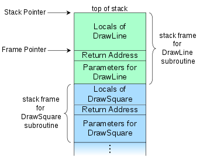

Understanding and traversing the call stack
Table of Contents
1. Introduction
First, a brief description of the stack. The stack is a data structure used for storing various kinds of information required by the active procedures of a computer program. The stack obviously follows a LIFO system, and it's usually accessed by pushing or popping data (although this is not always the case, as we will see). The stack usually grows downwards, which is a key detail that might be easy to forget at first.
There are two very important registers when dealing with the stack. The rsp
register (stack pointer) always points to the top of the stack, and the rbp
register (base pointer) is used to delimit stack frames (more on this
bellow). The rip register will be mentioned as well, since it points to the
address of the next instruction to the one being executed.
When a value is pushed onto the stack the rsp register is decremented, and then
the value is moved onto the top of the stack. Therefore, the rsp register always
points to the last pushed item. Remember that the stack (usually) grows
downwards.
When a value is popped from the stack, the value on top of the stack is moved
into the specified register and the rsp register is incremented.
2. Main uses of the stack
The stack is used mainly for 3 purposes:
- Storing some or all of the function arguments.
- Storing the return address when calling a function.
- Storing data local to the function (preserved registers, local variables, etc.).
When function foo wants to call function bar, it will push some of the arguments
on the stack (this depends on the architecture). Then, it will push the address
of the next instruction (rip register) onto the stack, so bar knows where to
return once it's done. Then, after foo calls bar, bar might push some of the
registers that need to be preserved by the callee, like rbp or r12, and it will
allocate some space for storing its data, if needed. This will be explained in
more detail bellow, with an example.
These kind of details are specified in the Application Binary Interface (ABI) of
each architecture. For example, about the pushed arguments in x86_64, we can
find the following.
System V AMD64 ABI - 3.2.3 Parameter Passing
Once arguments are classified, the registers get assigned (in left-to-right order) for passing as follows:
- If the class is MEMORY, pass the argument on the stack.
- If the class is INTEGER, the next available register of the sequence
rdi,rsi,rdx,rcx,r8andr9is used.- […]
If there are no registers available for any eightbyte of an argument, the whole argument is passed on the stack.
And about pushing the return address, we can also read the following.
System V AMD64 ABI - 3.2.1 Registers and the Stack Frame
If a calling function wants to preserve such a register value across a function call, it must save the value in its local stack frame.
Note that the return address is usually pushed implicitly by the call
instruction. The following would be equivalent.
; The following: call 0xDEADBEEF ; Internally does: push rip jmp 0xDEADBEEF
Note that in the example above, rip would point to the jmp instruction itself,
which is not accurate. The correct version would be:
push next jmp 0xDEADBEEF next: nop ; Continue execution...
Just like the return address is pushed implicitly, it's also popped implicitly
by the ret instruction.
; The following ret ; Internally does (without actually writing to RAX) pop rax jmp rax ; Or simply (although we can't directly write to RIP) pop rip
3. Stack frames
The term stack frame has been mentioned a few times, so let me explain exactly what it is. A stack frame is used to divide the stack depending on the subroutine that owns/needs the information. The Wikipedia page has a very good diagram for visualizing how a stack frame is organized.

The diagram shows the call stack layout for an upward-growing stack after the
DrawSquare subroutine (shown in blue) called DrawLine (shown in green), which is
the currently executing routine.
When DrawSquare wants to call DrawLine, it pushes its arguments onto the
stack. Those belong to the stack frame of DrawLine. Then, as I mentioned, the
call instruction will push the return address onto the stack (i.e. rip, which
would contain the next instruction of DrawSquare). Then, DrawLine is free to
push or allocate space on the stack for his local variables.
Usually, we preserve the rbp register (containing the base pointer of the
caller) by pushing it onto the stack itself. Then, the current value of rsp is
saved there throughout the execution of our procedure. That's why the following
pattern is a common way of identifying functions from assembly.
func: push rbp mov rbp, rsp ; ... mov rsp, rbp pop rbp ret
A more detailed example will be provided bellow.
In the last example, the stack grew upwards, which is not normally the case. The next one (from the ABI) shows a more realistic (but perhaps more confusing) version, where the top of the stack is in a lower address than the bottom.
As an example, let's write some of the assembly that DrawLine could be using. To
avoid cluttering the code with comments, I moved the explanation of each part to
the legend bellow.
In the following code, DrawLine pushes the base pointer (rbp) for preserving the
caller's stack frame. Then, it saves the value of rsp in rbp, creating its own
stack frame. This allows us to freely change rsp, while being able to access
function arguments and local variables with offsets relative to rbp. This might
seem a bit confusing at first, but it's a key detail since it essentially
creates a linked list, where you can follow rbp's to traverse stack frames.
DrawLine: ; (1) push rbp ; (2) mov rbp, rsp ; (3) push rbx ; (4) push r12 sub rsp, 0x20 ; (5) ; The real body of the procedure starts... (6) ;--------------------------------------------------------------------------- mov r12, [rbp + 0x16] ; (7) mov [rbp - 0x8], r12 ; (8) ;--------------------------------------------------------------------------- ; The body of the procedure ends... add rsp, 0x20 ; (9) pop r12 ; (10) pop rbx mov rsp, rbp ; (11) pop rbp ; (12) ret ; (13)
Legend of the code above:
- Right when we got called,
RSPpoints to the return address inDrawSquare, and theDrawLinearguments are right bellow it, from[RSP+0x8]to[RSP+(n*0x8)]. They are lower on the stack, but higher in memory. - The first thing we usually do is push the old
RBPvalue thatDrawSquarewas using. After pushing it,RSPwill point to the oldRBP, that's why we mentioned the "linked list" ofRBP's. The return address will be at[RSP+8]after pushing. - The current value of
RSPis saved intoRBP, creating our stack frame. This way, we can freely changeRSP, and access parameters with stack offsets relative toRBP. - Now
DrawLineneeds to push some registers that must be preserved by the callee (according to the ABI). After this, the "real" body of the procedure will be able to safely use these preserved registers. - It subtracts from
RSPto allocate0x20bytes some space for local variables. - The procedure body might access the function arguments by adding to
RBP, or it might need to store values in the reserved stack space, and access them by subtracting toRBP(e.g. for local variables). - Here, it adds
0x16to the base pointer for "jumping" over both the pushedRBPand the return address, accessing some argument, and saving it intor12. - Then, it saves that value into some of the stack space that we reserved when
subtracting from
RSP. - When we are done, we add back the space previously subtracted from
RSP. - We pop back the registers that had to be preserved by the callee.
- We restore the base pointer into
RSP. - We pop the caller's
RBPregister. - Finally,
RSPpoints to the return address fromDrawSquare, which was pushed by thecallinstruction. As I said, theretinstruction will pop it and jump to it.
Now that we have a good understanding of how the stack works, we can look at the
assembly of each function to see where our bSendPacket variable will end up in
the stack.